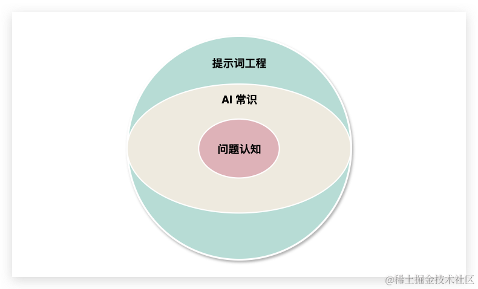
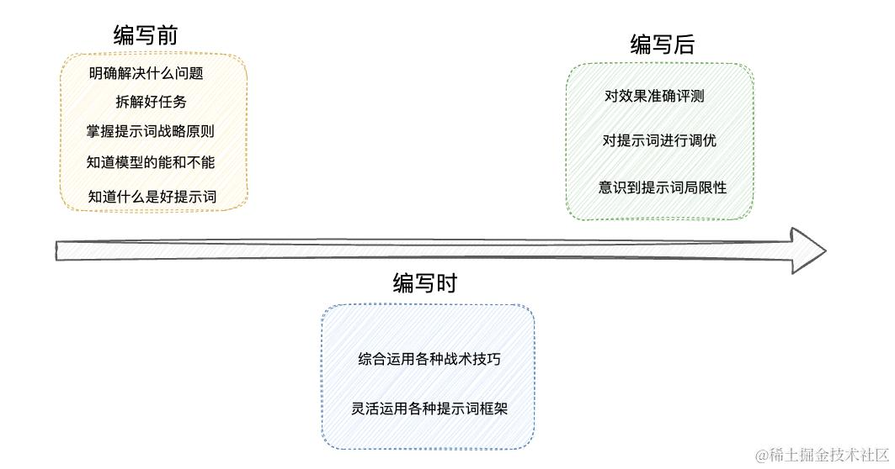
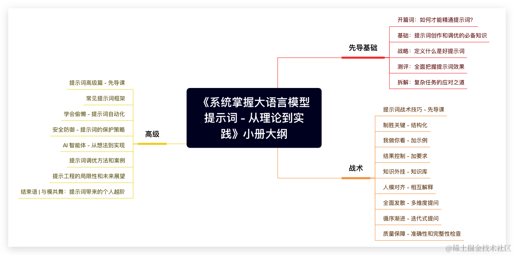

大家好，我是明明如月，国内头部高级软件工程师。拥有 6 年多大厂软件开发经验， 1 年多 AI 业务应用经验，拥有丰富的业务提示词调优经验和模型微调经验。大厂技术大学讲师，进行过多场内部 AI 相关直播分享，场均听众 2000+。多个主流技术平台专家博主，全网粉丝量 6万 +，阅读量 500万 +。信仰 AGI，已经将 AI 通过自定义 Chatbot /搭建 Agent 融合到我的工作流中。
为什么我要讲提示词？
著名的美国未来学家、作家和技术思想家凯文·凯利（Kevin Kelly）在《今天没有真的AI专家，年轻人机会来了》演讲中建议年轻人要主动走到技术前沿，因为前沿意味着更少的竞争，还有更多的机会并且强调了提示词的重要性。
百度创始人、董事长兼 CEO 李彦宏在 2023 中关村论坛发表题为《大模型改变世界》演讲中预测，未来十年，全球 50% 的工作将涉及提示词工程，并指出提出问题比解决问题更为重要。
随着越来越多的软件加入 AI 能力，各行各业的从业者开始利用 AI 解决工作、学习和生活中的各种问题。
提示词是与大语言模型沟通的桥梁，是一门关于提问的艺术。掌握提示词技术可以更好地驾驭大模型，编写高质量的提示词，解决各种问题，从而更早地享受 AI 带来的红利。
在工作中，如果你能发现利用大语言模型显著提高业务效率的场景，并编写高质量的提示词不断进行优化，就能加速落地并取得良好的业务成果。如果能够精通提示词工程，你就不必局限于现有大语言模型应用平台所提供的有限智能体应用，可以根据个性化需求快速编写高质量提示词，创建最适合自己的智能体，从而高效解决各种问题。例如，作为一名 Java 程序员，我创建了“Java 专家”、“源码解读专家”、“BUG 杀手”、“UML 绘图专家”、“Java 命名专家”和“代码审查专家”等智能体，以更好地辅助编程。同样，在学习和生活中，这一方法同样适用。比如在准备软考高级架构师考试时，我创建了“通俗讲解助手”和“软考高级辅导专家”等智能体，帮助我高效备考，并在短时间内顺利通过考试。为了全面和深入地思考问题，我创建了“视角专家”、“本质思维专家”、“非暴力沟通助手”和“启示助手”等智能体，给予了我极大的帮助。为提升写作质量，我还创建了“文章打分点评助手”、“文章润色助手”、“写作指导专家”和“爆款标题助手”等智能体，这些智能体对我的写作质量的提升也有显著效果。
提示词学习有哪些痛点？
目前，市场上有许多提示词相关的书籍和在线教程，但大多数内容相似且缺乏系统性，过于学术化且不接地气。
多数提示词教程通常会直接讲解各种提示词技巧，未能从战略高度帮助用户深刻理解提示词的本质，也难以跳出提示词工程本身来看待提示词调优整件事。因此，用户在学习后往往难以在具体场景中编写有效的提示词，面对各种异常情况时缺乏清晰的调优思路，不知道如何运用行之有效的方法进行调整。
许多人对提示词的认识较为浅显，随意编写提示词后如果效果不佳，就归咎于大模型能力不行，从而放弃使用，这种现象令人惋惜。身边也有一些编辑朋友想要创建智能体提效，但苦于不知道如何编写提示词，也会向我请教相关经验。在工作中，有些同事经常向我请教提示词调优的经验。事实上，很多问题只需遵循本小册中介绍的战略思想，并结合所提供的战术技巧，即可有效解决。按照小册中的调优思路和方法，绝大多数问题都能迎刃而解，但许多人对此并不知晓。
因此，我们迫切需要一本系统化、实用又更接地气的提示词小册，从宏观战略思想和具体战术技巧两个层面深入剖析提示词及其工程的本质，传授提示词创作的经验和方法。同时，在遇到异常情况时，能够提供清晰的调优思路和行之有效的应对方法。这样的小册不仅要深入讲解提示词工程，还应具备超越提示词工程的全局视野。
如何精通提示词？
要精通提示词工程，首先需要明确提示词工程的角色和承担的任务，掌握提示词工程的各种战略思想和战术技巧；需要具备一定的 AI 常识；最关键的是要对业务和任务有深入的理解。

要精通提示词，我们首先需要明确其角色和任务。 提示词是与大语言模型沟通的桥梁，是一种关于提问的艺术。在当前阶段，提示词主要承担两项任务：一是准确且完整地阐述任务，二是在大语言模型理解任务但未能很好地完成时，通过提示词引导模型更好地完成任务。
精通大语言模型的提示词，需要掌握提示词相关的基础知识，包括大语言模型、模型微调、提示词和提示词工程等概念。了解什么是好的提示词，才能编写出高质量的提示词。此外，我们还需要科学地对提示词评测，以便更准确地把握其效果。同时，“磨刀不误砍柴工”，在编写提示词之前，应对任务进行合理拆分，将最适合大模型完成的任务交给模型处理，不适合的任务则采用其他方式解决。
为了精通提示词的使用，还需掌握重要的战术技巧。 对于复杂业务场景，提示词的结构化尤为关键。编写结构化的提示词不仅提高了其可读性和可维护性，还降低了模型理解的难度。此外，掌握如加示例、增加要求、提供知识库、多维度和迭代式提问，以及对用户输入进行准确性和完整性检查等具体技巧也是必要的。
要精通提示词，还需掌握高级的技巧。 了解常见的提示词框架，掌握自动编写提示词和提示词调优的工具，了解提示词安全与防御知识，学习如何通过创建智能体解决问题，以及清晰的提示词调优思路和方法。最后，我们需要认识提示词的局限性，了解其未来发展的趋势。
“纸上得来终觉浅，绝知此事要躬行。” 要精通提示词工程，除了掌握上述的战略思想和战术技巧，还需要通过持续的“刻意练习”来真正理解提示词的精髓，创作出高质量的提示词。最佳途径是结合自身的生活、学习和工作场景，编写提示词并创建智能体来解决实际问题，随后不断进行调整与优化。此外，还可以在智能体应用平台上找到感兴趣的智能体，进行实验性的复刻和改进，直至达到或超越官方提示词的效果。
与时俱进，持续学习。随着 AI 技术的快速演进，新的提示词优化技巧也会不断出现，而一些原本有效的策略可能会逐渐被淘汰。这种快速的变化要求我们始终保持学习的态度，不断学习掌握新的提示词技术和工具，不断更新知识体系，跟上技术的发展步伐。
提示词创作的生命周期
在正式学习提示词理论和实践之前，大家还需要对提示词生命周期有个整体的了解。

编写提示词并非最终目的，它只是解决问题的一个关键步骤。我们的核心目标是解决问题。因此，无论是日常场景还是业务应用中，都需要首先明确问题的定义，进而思考哪些任务适合交给 AI 处理，哪些适合通过编码实现，哪些又需要由人类完成。我们应当将适合AI处理的任务分配给 AI，并将任务的复杂度拆解到AI能够胜任的程度。
在编写提示词之前，了解大模型的能力边界至关重要。我们需要清楚地知道模型擅长处理哪些任务，以及在哪些方面表现有限，从而合理分配任务。
在编写提示词时，我们应灵活运用各种行之有效的具体技巧，以确保提示词能够准确引导模型完成预期任务。
编写提示词后，还需要对模型的输出效果进行评估。当模型的回答不符合预期时，必须能够迅速分析原因，并通过不同的手段进行调整和优化。必要时，可以采取多轮调优的方式，提升提示词的精确性。
同时，我们需要意识到提示词的局限性。当提示词已接近模型的能力上限，依然无法获得理想的结果时，可能需要考虑其他解决方案，如切换到更高级的模型、进行模型微调、采用多智能体协作，或重新评估任务拆解的合理性。通过这些手段，我们可以更有效地解决问题并优化工作流程。
我是如何安排小册的？
为了解决上述痛点并践行精通提示词的方法，本小册设计了三个模块：先导基础模块、战术技巧模块和高级模块。

先导基础模块： 我们将介绍提示词创作和调优必备的知识，包括大语言模型、提示词、提示词模板、提示词工程和模型微调等知识。然后我们从战略高度介绍什么是好的提示词，给出提示词效果测评的方法，最后指出复杂任务的应对之道即进行任务拆解。
战术技巧模块：我们将介绍各种提示词编写技巧，包括结构化、加示例、加要求、知识库、人与模型相互解释等。
高级模块：我们将讲解常见的提示词框架，教大家学会“偷懒”实现自动化提示词编写，介绍提示词的安全防御相关知识，通过提示词创建各种智能体为工作、学习和生活提效，还会给出系统地提示词调优思路、方法和案例，最后对提示词的局限性和未来发展进行展望。
寄语
相信在学习完本小册之后，你将对提示词工程有一个深刻的认识，能够系统地掌握大语言模型的提示词工程，轻松编写高质量的提示词与大模型进行交互，高效解决工作、学习和生活中的各种问题，助力你成为“更擅用 AI 的人”，更好地享受 AI 快速发展的红利。
在学习过程中，如果你有什么问题，或者有好的经验可以分享，欢迎你在留言区与我分享，我们一起交流，共同进步。
COMMUNITY NOTES
读者评论
这篇文章暂时没有读者留言。